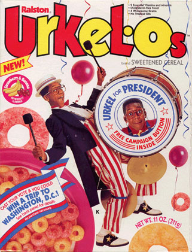
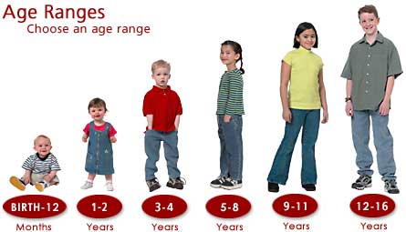
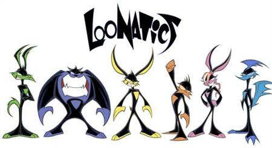
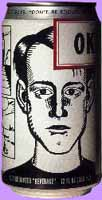
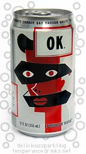
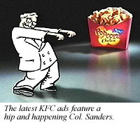
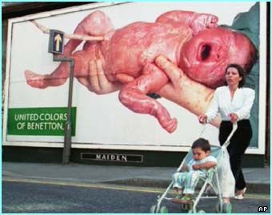
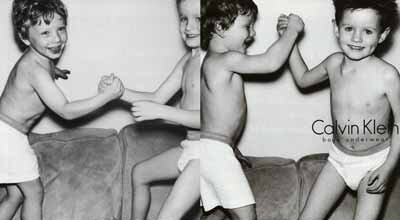
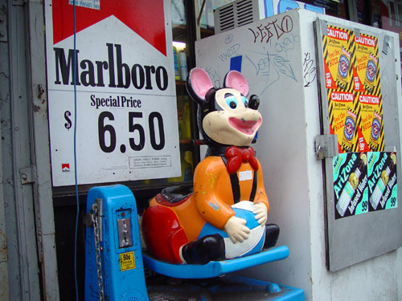
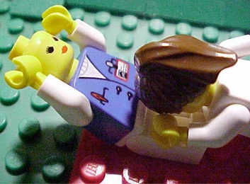

|
 Kid MarketingChildren are like date rapists: they have to be told repeatedly that no means no. Because concepts like parental respect have grown so inexplicably abstract, the average preadolescent continues nagging his parents upwards of nine times for a desired product. Twelve and thirteen year olds -- the group most targeted by advertisers -- nag their parents more than fifty times, continuing their unrelenting campaigns of harassment for weeks at a time. Can we have a pool, dad? Can we have a pool, dad? When delivered by a parent, phrases like "no, we will not take you to Mount Splashmore" feel less like big red stop signs and more like invitations for continued debate. In children's marketing circles, this technique is referred to as pester power, or the Nag Factor -- not to be confused with the popular pornographic DVD franchise Gag Factor. The Initiative Media firm acknowledges that fifty percent of all toy purchases would never have been rung up in a million years had it not been for the sweet, wailing nags of a child. That's fifty percent across every conceivable category relating to children: toy purchases, trips to fast food restaurants, vacations to amusement parks -- even automotive sales. Car companies offering vehicles with DVD players aren't selling to mom and dad, they're delivering coded messages of nagging hope exclusively to the Spongebob set, those who can't last more than five minutes without audiovisual stimulation. According to the Center for Science in the Public Interest, nagging works best on four specific classes of parents: 1. Bare-Necessities Parents. Mom and dad (e.g. Frasier and Lilith Crane) are upscale and affluent, with a two-story house or greater, and at least two cars. One or both has a college degree and graduate work. They are intelligent, and on average more or less resistant to whining. The only successful nag will be the value-added "importance" nag under the guise of a more sophisticated motive. But I need it to finish my science experiment, or: I need to own the complete set of Chaucer's Canterbury Tales. 2. Let's Be Pals Parents. (e.g. the mom on Gastineau Girls) Mom and dad are much younger parents -- too young to know what the fuck they're doing. Typically they'll buy video games and Playstations as much for themselves as for their children, while everybody wanders around the house wearing Hello Kitty pajamas and planning a Renaissance fair. Not much hardcore nagging is required in these families, just add your shit to their shopping list. If mom or dad are employed, pray they can cling to their tech support jobs. 3. Indulging Parents. (e.g. any parent you've seen on Intervention) Mom and dad are working class parents with very little time or extra spending money. Fast food and toys become transitory substitutes for love, discipline, or home-cooked meals together at the table. Here, nagging sends a message: my child needs something, and buying it will temporarily push away guilt. 4. Conflicted Parents. (e.g. any celebrity parent) Mom and dad have no idea what to buy for their kids, and actually find advertising a resource. At times, they have sneaking suspicions that they really shouldn't take their child to Chuck E. Cheese three times a week, but -- eh -- what are you gonna do. It happens, and it makes the nagging go away, at least for awhile. Cartoon characters serving as brand mascots provide a quick and easy band-aid to an otherwise uninspired youth label. Colonel Sanders raps and spits into a drumstick-shaped microphone about eleven herbs and spizices. Ronald McDonald pops and breakdances in circles around a freshly-scrubbed rainbow of multicultural children who sit there lovin' it. An updated, ostensibly "edgier" Bugs Bunny turns his baseball cap inside-out. Fat Albert's ringtone wants to know Where You At. Donald Duck sports ever-blingier ba-bling, and Mickey Mouse looks more and more like those Tasmanian Devil pimps you see in cheap tattoo parlors. Even Apple Computer's operating system is branded with a goddamn smiley face. Kids use icons, SMS shorthand and text messaging in lieu of more complicated concepts like complete words and sentences sculpted into structured conversation, and who better to push that agenda then a Trix rabbit clutching a Twix bar? Eightball cartoonist Daniel Clowes and Black Hole cartoonist Charles Burns lightly tiptoed into teen marketing on a global scale when they designed artwork for a line of Coca-Cola drinks. Named after the most recognized word in any language -- the second being "Coke" -- OK Soda was a short-lived brand keenly aimed at what passed for the "Generation X" demographic in early 1994. The brand was one of the earliest to capitalize on the idea that young people were -- what's the word? Disillusioned? Disenfranchised. Disaffected? How about disinterested. The labels were great, the soda was terrible, and less than a year later the cans were yanked from shelves. To this day, The OK Soda legacy remains one of the most transparent, desperate and ridiculous youth campaigns ever made by Big Cola. "Children nowadays are tyrants. They contradict their parents, gobble their food, and tyrannize their teachers." -- Socrates, 425 B.C. Kid marketing? Sounds like a retarded DJ name. Children aren't burdened with mortgages, rent, groceries or basic utilities -- unless mom or dad is makin' them pitch in. They're a highly lucrative market, with a spending power greater than the gross national product of countries like Finland, Portugal and Greece. Teen Research Unlimited is an Illinois marketing think tank which has interviewed over a million teenagers. They've conservatively estimated that teens in 2006 would spend upwards of $159 billion of their own money and their parents' money combined. Teens need jobs, but as a result of our upside-down economy, adult workers around the country are clinging desperately to all the decent entry-level service positions. Teenage unemployment is at an all time high, and rising gas prices means that while an unprecedented cache of teen dollars might be temporarily flowing directly into gas tanks, kids can't drive all the way to and from the Apple store as often as they'd like. Ninety-nine cents for a song? Fuck that noise, I'll LimeWire it. Christ on the cross, it sucks anyway. Trash can. Weirdly, today's incoming crop of teens are reportedly devoted to bizarre concepts like God and their own mothers -- in that order. The number one reason couples remain in love is not that they like the same things -- but that they hate the same things. A brand wishing to successfully exploit a long-term relationship with a child must closely align itself with a similar premise. Find out what the kid hates, and then make fun of it. There is nothing more annoying to an avant-garde teen than being told he's on the cutting edge, as he genuinely believes himself to be one hundred percent self-alienated from the social strata. When a clothing company like Diesel embeds anti-advertising messages directly in its print and billboard campaigns, it represents a hackneyed paradoxical chestnut which young people haven't already seen a million times. When Benetton offers yearly catalogs "united in color" featuring cocky, self-confident bumper sticker platitudes about sex, religion, and racism alongside images of death-row inmates or handicapped children, kids don't immediately recognize that their clothing manufacturer is boldly "coming forward" in favor of something nobody ever needs to formulate an opinion about. The screaming scraps of press generated from these early examples of extreme-to-the-max slabs of kiddie content -- especially when a community of uptight parents gangbangs together in protest -- are ten times more valuable than the campaign itself. Gone are the days of adutainment or infomercials, as they've since been replaced by self-aware "controvercials". Calvin Klein claims credit for the most successful attempt at thumbing its nose at how square and backwards adults can be. In partnership with Warnaco, Inc., CK launched a billboard campaign in New York which featured semi-naked toddlers posing in tight underwear. Public outcry resulted in then-mayor Rudy Guiliani yanking the ads straight down -- a real triumph in "numerically measurable mainstream accessibility," to quote Channel 101 co-founder Dan Harmon. It's unclear how many toddlers who saw the CK ad were subsequently inspired to tart themselves up a little more. Okay, okay: the nag factor, the billions dollars' worth of anti-market research, the conspiratorial plots to seize and secure innocent young minds -- we get it. Big fuckin' deal and who cares. Tell us something we don't know. Indeed, the most disturbing marketing trend is what children's companies find themselves battling now: the duh factor. The segment of our population comprised of pre-adolescents up to and including age 14 (often referred to mockingly as the tween generation or Millenials) is rapidly losing their predisposition for creativity and imagination. LEGO, a company teetering precariously on the premise that kids want to be creative, has been struggling with exactly that conundrum for just over a decade. As recently as 1990, the standard box of LEGO bricks contained anywhere from 500 to 1000 pieces. Through sales research, focus groups and peer review, LEGO now believes such a set is way, way too complex. Let's dial it back a bit: not only do children not have the patience to gather together all the required parts for a castle, or boat, or car -- there isn't enough space in their tiny, ridiculous brains to previsualize long-term plans, imagine new forms, or create the requisite custom shapes. As a response to this trend, LEGO decreased the number of pieces in each box. Instead of grappling with a full one-hundred pieces to build that Kentucky Fried Chicken or Starbucks Coffee, now you only need ten. And look: these pre-fab green umbrella straws snap directly into the miniature espresso machine -- you don't even gotta build 'em. LEGO bricks have gotten bigger, as well: the size of each block in a set has increased steadily over time in direct proportion to your child's inability to manipulate his backwards, clumsy-ass ham hands. Who needs hours of unnecessarily complicated finger work when you're trying to develop your motor skills? Finally, the majority of "bricks" in today's LEGO kits have evolved exactly as Darwin intended: they're now shaped exactly like the cars, trees, humans, animals, ships, and rockets originally subject to interpretation by a kid's imagination. And which set of LEGO is right for you? Choose from styles like Harry Potter, Star Wars, Exoforce, Knight's Kingdom, Bionicle, and numerous other brandy-brands too depressing even to think about. It's only a matter of time before LEGO starts packaging their product directly inside the Happy Meal carton. The only thing more retarded might be those among us in pursuit of a LEGO Mindstorms hobby. "Challenging" your child to play with electronic, battery-operated toys and program squiggly meta-scripts so his optically sensitive robot greets him at the door with a drink after day care is the easiest thing your child will ever do with his life. Lock him in a room with 10,000 single-cell plastic bricks, and don't let him out until he's successfully constructed the college of his choice. It's inevitable that all these trends in teen marketing continue uninterrupted, because there's no end in the word trend. Except of course at the end of the word trend. |